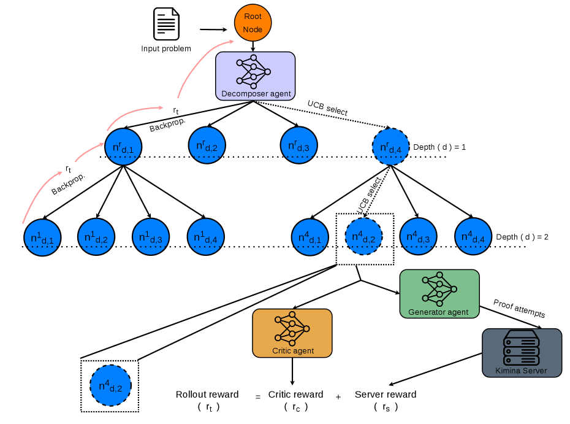

Uses the Lean 4 compiler (Lean 4.15, Mathlib) as a scalar reward oracle for MCTS proof search, and audits proofs for sorryAx dependence at kernel level.
Abstract
Formal theorem proving with large language models remains challenging due to the difficulty of navigating large proof search spaces efficiently. Existing tree search approaches either feed verbose compiler error messages directly into the generation context, increasing context usage during search, or employ non-standard evaluation protocols that prevent direct comparison with established baselines. We propose a three-role Monte Carlo Tree Search (MCTS) framework that treats the Lean 4 compiler purely as a reward oracle using compiler output as a scalar signal for UCB-guided tree updates without feeding error content into the generation context. Our framework decomposes proof search into three roles: a generator for proof attempts, a decomposer for subgoal decomposition, and a critic for subgoal quality evaluation. We evaluate across 4 benchmarks spanning competition mathematics and physics (MiniF2F, PutnamBench, LeanPhysBench, PhysLeandata) with three prover models at standard proof attempt budgets (PAB@16 to PAB@256). Our method achieves 87.1% on MiniF2F with Goedel-Prover-V2-8B at PAB@256 and solves 26/659 PutnamBench problems at PAB@32 surpassing base sampling 18/659 at same proof attempt budget. Through an exhaustive axiom-level audit of every compiled proof, we further identify reward hacking in search-based theorem proving: DeepSeek-Prover-V2-7B produces proofs on PutnamBench that pass compilation and the standard sorry-token scan while depending on sorryAx. The audit removes 4 and 8 such proofs from whole-proof sampling at PAB@32 and PAB@128, and 11 and 19 from MCTS. We do not attribute these counts to the search procedure; we report them to establish that kernel-level auditing is necessary for compiler-verified evaluation.
Problem
LLM-based formal theorem proving must search very large proof spaces efficiently. Existing tree-search methods either feed verbose compiler errors back into the generation context or use evaluation protocols that cannot be compared directly with standard baselines.
Approach
A three-role MCTS framework uses a generator, a decomposer with temperature-decayed sampling, and a critic that scores subgoal quality. Search runs over natural-language proof plans. The Lean 4 compiler supplies only a scalar reward, which is backpropagated for UCB-guided selection; no error text enters the model context. Evaluation covers MiniF2F, PutnamBench, LeanPhysBench and PhysLeanData with three frozen prover models in a pinned Lean 4.15/Mathlib environment, and every compiled proof receives an axiom-level audit.

Figure 1: Overview of the proposed search framework. Each node n^{P}_{d,N} represents the k -th child at depth d , with parent P : P = r denotes the root.
Results
With Goedel-Prover-V2-8B at PAB@256 the method reaches 87.1% on MiniF2F, and it solves 26/659 PutnamBench problems at PAB@32 versus 18/659 for whole-proof sampling, while using about 33% fewer inference tokens. The audit finds DeepSeek-Prover-V2-7B proofs that compile and pass sorry scans yet depend on sorryAx, showing that kernel-level auditing is needed.